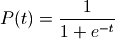
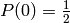
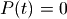
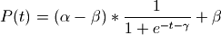

There are two ways for handling uncertainties about lookups. Either, one can perturb the lookup table using Hearn’s method. Alternatively, one can specify one or more alternative functionalal relations that describe the relation specified in the lookup, specify the various parameters of this function as uncertainties and sample over these.
In the first case, to be filled in
The basic idea of the second approach is to use a function for generating the lookup, the function is parameterized by one or more uncertainties. To realise this approach, one will need to overide run_model() in order to extract from the case dict the uncertainties related to the lookup, use a function to calculate the entries for the lookup, and add this lookup to the case dict.
Suppose that the lookup specifies some S-shaped relation that can be described using a sigmoid function. The basic sigmoid is:

This generates an S-shaped curve between 0 and 1, with
. However, suppose that our relation is uncertain,
but runs from arround -1 to arround +1 and  is also uncertain,
but is thought to be roughly 5, we can now modify the basic sigmoid by adding
three parameters to it that allows us to explore these three uncertainties.
Suppose we call these uncertainties  for the upper bound,
for the upper bound,
 for the lower bound, and
for the lower bound, and  for the value where
.
for the value where
.

We can implement this function easily in Python.
def sigmoid(t, alpha, beta, gamma):
return (alpha+beta) * 1/(1+exp(t-gamma)) +beta
If we now add alpha, beta, and gamma as ParameterUncertainty instances to self.uncertainties.
self.uncertainties.append(ParameterUncertainty((0.8,1.2), 'alpha')
self.uncertainties.append(ParameterUncertainty((-1.2,-0.8), 'beta')
self.uncertainties.append(ParameterUncertainty((4.75,5,25), 'gamma')
and override run_model().
def run_model(self, case):
#get lookup related uncertainties
alpha = case.pop('alpha')
beta = case.pop('beta')
gamma = case.pop('gamma')
#make a new lookup
newLookup = [(t, sigmoid(t, alpha, beta, gamma) for t in range(-10, 10)]
#add the new lookup to the case
case['name of lookup'] = newLookup
super(self, ClassName).run_model(case)
Here, we first pop the three lookup relation uncertainties from the case dict. We use these to generate a lookup with the specified sigmoid function. We then add a new element to the case dict with the name of the lookup as key and the new lookup as value. Finally, we call the super of run_model() with the updated case dict. In this way, we are now able to explore the three lookup related uncertainties.
The default implementation of model_init() provided in VensimModelStructureInterface does not do anything with the policy argument. Therefore, if one want to explore the performance of one or more policies, we will have to add some functionality to this method. This can be done in many different ways. Here will shorty discuss two simple ways for doing it: using alternative Vensim models and setting policy specific parameters on a default model.
Note
In both examples, we assume that we are dealing with a single VensimModelStructureInterface. If there are model structure uncertainties and we are using multiple different VensimModelStructureInterface instances, these approaches will not work as straightforward. Using multiple VensimModelStructureInterface instances means that for each basic vensim model, seperate policy versions need to be made. Than, in each model_init(), we need to identify the appropriate model file. The parametric approach wil only work if each of the structurall different models has the appropriate parameters.
The following modification to model_init() allows us to use different models for different policies.
1 2 3 4 5 6 7 8 9 | def model_init(self, policy, kwargs):
#update the model file to point to the policy model file
try:
self.modelFile = policy.get('file')
except KeyError:
EmaLogging.warning('file not found in the policy dict')
# call super
super(self, ClassName).model_init(self, policy, kwargs)
|
Here we assume that policy is a dict containing a ‘file’ key. The value associated with this key specifies the path tot the model relative to the working directory. The attempt to set the self.modelFile is surrounded with try and except in order to be able to run the model without any policies. In that case, the policy dict will not contain the file key, resulting in a KeyError. We catch this error and send a warning message to the logger. After updating the model file, we can use the default behavior for starting Vensim and loading the model provided by super(). With these modifications to model_init(), we can now use this to explore the performance of multiple different policies across the uncertainties.
policies = [{'name': 'policy1', 'file':r'\policy1.vpm'},
{'name': 'policy2', 'file':r'\policy2.vpm'},
{'name': 'base case', 'file':r'\base case.vpm'}]
ensemble.set_policies(policies)
The following modification to model_init() allows us to set policy related parameters.
1 2 3 4 5 6 7 8 9 10 | def model_init(self, policy, kwargs):
# call super
super(self, ClassName).model_init(self, policy, kwargs)
#get model parameters from policy
policy.pop('name') #remove the name from the dict
#the remainder of the keys specify policy parameters
for key, value in policy.items():
vensim.set_value(key, value)
|
the reason for first calling super() is that in the super(), vensim is started and the model is loaded. After that, we can use set_value() to set the parameters specified in policy. We can now add policies to SimpleModelEnsemble using set_policy().
policies = [{'name': 'policy1', 'param1': 5,'param2': 1.2},
{'name': 'policy2', 'param1': 7,'param2': 0.8},
{'name': 'base case'}]
ensemble.set_policies(policies
A common occuring problem is that some of the runs of a Vensim model do not complete correctly. In the logger, we see a message stating that a run did not complete correct, with a description of the case that did not complete correctly attached to it. Typically, this error is due to a division by zero somewhere in the model during the simulation. The easiest way of finding the source of the division by zero is via Vensim itself. However, this requires that the model is parameterized as specified by the case that created the error. It is of course possible to set all the parameters by hand, however this becomes annoying on larger models, or if one has to do it multiple times. Since the Vensim DLL does not have a way to save a model, we cannot use the DLL. Instead, we can use the fact that one can save a Vensim model as a text file. By changing the required parameters in this text file via the workbench, we can then open the modified model in Vensim and spot the error.
The following script can be used for this purpose.